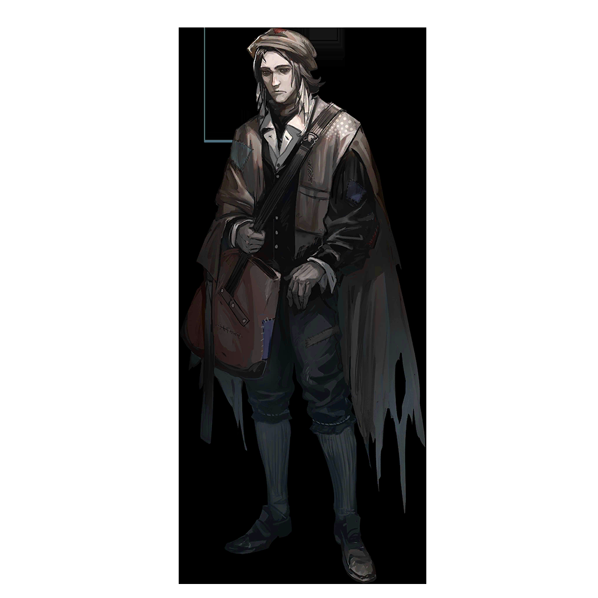

城镇居民A
嘿，那边的小伙子，来点海藻酒吗？
城镇居民B
我们必须要保持洁净，酒会使人堕落，它——
城镇居民A
什么日子办什么事儿嘛。估摸着也是为了庆祝港都中心城区升起，那边的惩戒军刚才都来光顾我的生意了。
城镇居民B
……好吧，我只喝一点点，要是醉昏了头，就看不清海图上的坐标了。
城镇居民A
到时候你还看什么坐标啊！再过两个小时，港都的中心城区就会直接在你眼前升起来！

城镇居民C
来看看，那位阿戈尔监事留在这儿的海图。他们说港都的坐标已经在上面了。
城镇居民D
中心城区……你能想象那地方长什么样吗？真要是住在那里面，得是什么感受？
城镇居民C
听说那里有些房子，就连砖缝都是用金粉勾的。那样的话，是不是一点都不会漏风？
城镇居民C
你能想象吗，不会被海风吹透的房子？
城镇居民D
……我是在草棚里长大的啊。
城镇居民D
我甚至都没想过有一天自己会看着与阿戈尔相连的海图，在上面找那些只有老一辈人提过的名字。
城镇居民C
那都是伊比利亚曾经的城市啊……圣徒在上，居然真有那么多。
城镇居民C
喏，你看，港都的坐标在那儿！它还是灰色的。
城镇居民D
两个小时之后，它就要被点亮了吧？
城镇居民C
船厂的工人们今夜一定会很忙，不知道哪个伊比利亚人能获此殊荣，亲手点亮一座静默了六十三年的宏伟都城。
城镇居民D
大概是哪位深受圣徒阁下信任的大审判官吧。这个时间，他们应该已经在准备了。

干练的船工
还有两个小时。起重机那边已经一切就位了，你的船检查得怎么样了？
热情的船工
没有问题！像斐戴拉大审判官嘱咐的那样，要是起重机出了故障，随时有船可以出海检修设备！
干练的船工
那就再测试一遍通讯稳定性，一旦我们给出信号，打捞中心的操作员就会启动程序，正式开始打捞了。
热情的船工
明白！等等，我们还没有获得通讯系统的授权？
干练的船工
权限应该在半小时前就开通了啊？去找找斐戴拉大审判官！

特菲
我们进来了，我们就这么进来了？这可是整个港都的中控室啊！

特菲
这地上、墙上，不会真的都是金子吧？这么大的炉子，是港都的动力源？快过来看，还有这个……

特菲
瓦列里奥，你光盯着那个黑乎乎的大铁匣子看什么？

瓦列里奥
导航、动力、通讯——港都作为移动城市的几乎所有功能，都是这个大铁匣子里的东西在维系着。

特菲
那里面好像有什么东西在动——

瓦列里奥
可别碰它，斐戴拉大审判官会怪罪我们的。
特菲
这些都是那个大审判官告诉你的吗？你向她保证了什么，她才同意让我们进来啊？

特菲
她之前拒绝我，可是毫不留情啊！

瓦列里奥
斐戴拉大审判官需要坚守自己的职责，让她启动海图系统，是卡门阁下的直接命令。

特菲
那你这次又是怎么搞定的，快给我讲讲！我嘴皮子都磨破了，她就像没听见似的！

斐戴拉
你们回去巡逻吧，切记，不能让任何闲杂人等靠近中控室，那是整个港都的心脏。

惩戒军士兵
是！
斐戴拉
点亮海图……她根本不知道那个光点意味着什么，更不知道审判庭要付出什么，就连我也……
斐戴拉
谁在那里！
瓦列里奥
抱歉，大审判官阁下，是我。
斐戴拉
不用说了。
斐戴拉
从我们认识到现在不过一两周，你替埃斯特菲尼娅求情多少次了？我应当辞退她，还你我一个清净。

瓦列里奥
我明白，您也听厌了我讲她的事。所以，我这次来，是想跟您讲讲我自己。
斐戴拉
你？

瓦列里奥
在遇到特菲之前，我也在伊比利亚的各处流浪。我身上的伤是为救一个朋友留下的，在咸涩的海风里，它迟迟没有愈合。

瓦列里奥
疼痛让我无法入眠，每个宵禁的夜晚，我只能思考，思考我为何沦落到这个地步，思考伊比利亚的一切。
瓦列里奥
直到我在酒馆里遇到这个唱船歌的黎博利，我一眼就能看出她靠欺骗为生，但她用自己的钱给我买了食物。
瓦列里奥
之后，我与她一起流浪，她用那套贵族的说辞骗了很多人，也救下了很多人。

瓦列里奥
她好像真的把自己当作了黄金时代的贵族，她想保护所有拥护者，甚至实现他们的愿望——包括我的，所以我们才来到这里。
瓦列里奥
而这次，她向你提出不知天高地厚的要求，也只是为了再救一个人。
斐戴拉
……

特菲
……怪不得她能让你也跟我一起进来。你看，虽然死板得要命，但真诚的故事和经历还是可以打动她的。

特菲
要我说，我们这回点亮了坐标，真成了像样的“大人物”之后，就该去出书立传，给所有人讲故事。我口述，你写。
瓦列里奥
……
特菲
怎么啦？你怎么不说话了？我还想知道是你的哪段经历那么感人，能打动那位石头似的大审判官呢。
瓦列里奥
我还有哪段经历，是你不知道的呢？
瓦列里奥
既然大审判官阁下把这份重任交到了我们手上，我们就绝不能耽搁一秒。故事，就等回去再讲吧？
特菲
喔喔，那当然好！

特菲
不过，我们是不是应该向斐戴拉大审判官确认一下操作流程？点亮海图这事儿还是太大了……
瓦列里奥
不用担心，很快斐戴拉大审判官就会来的。
瓦列里奥
继续吧，只要能恢复海图系统的功能，一切都会如你所愿的。

惩戒军士官
自首的那个岛民没说假话，这三天我们已经确认了袭击案嫌犯的据点。为了避免惊扰敌人，暂时还没有实施任何抓捕行动。
惩戒军士官
那些人多是伤员，士气低落，但他们的组织者非常谨慎，直到今早才露面。也是因此，我们才能确认据点的位置无误。
惩戒军士官
今晚，港都中心城区会回归伊比利亚的海岸线，而那些阴魂不散的邪教徒，也会受到审判。
惩戒军士官
艾丽妮，圣徒阁下还有什么指示吗？

艾丽妮
卡门阁下不会亲自参与抓捕，但他给出了明确的指示——
艾丽妮
如果敌人已是深渊的俘虏，他们的尸骨甚至不配被扔进大海；但若他们只是迷茫的同胞，就用灯火指引他们上岸。

艾丽妮
列队！出发！

南多
教官！

德鲁莎
我把耳朵塞好了，你说吧。
南多
您才休养了几天？伤口都还在渗血！

德鲁莎
要我躺在自己乱七八糟、气味难闻的屋子里，看着你们从窗口经过，去抓我查了这么久的幕后黑手——
德鲁莎
我伤口就要气裂了。

南多
您在说谎，教官。

南多
如果您在完全能合理偷懒的情况下选择行动，那就意味着您觉得这次任务一定有问题。

德鲁莎
呵，难得机灵。
南多
事情……这么严重？
德鲁莎
我没证据，你就先当是一个失血过多的伤员在胡言乱语吧。

德鲁莎
不论那位主教能变出多少只恐鱼，他都只有一张嘴能用来指挥人。对于一个要躲在暗处的人来说，那张嘴还不太方便说话。
德鲁莎
我不相信他仅凭自己就能那么手眼通天，指挥那些邪教徒和岛民完成那样精准的袭击计划。

南多
您怀疑他还有帮手？

德鲁莎
希望是我想多了。
德鲁莎
保护好自己，别死在伊比利亚几十年难遇的大日子里。

纳乔
克莱门莎监事？您应该在广场参加迎回雷亚-伊比利亚的庆典，怎么在这儿……

克莱门莎
奥卢斯的计划很有可能还在继续，为了避免横生事端，惩戒军今晚就会开始抓捕行动。
纳乔
今晚？那我的同胞们——
克莱门莎
我已经与伊比利亚阁下达成了些许共识。所有岛民都有机会离开这里，去往阿戈尔生活。

克莱门莎
但不是现在。
克莱门莎
阿戈尔有权迁移同胞，但无权干涉今晚的抓捕行动。

克莱门莎
如果这场抓捕和后续的审判因我的干涉而生变，我不确定伊比利亚会不会发生更大的动乱。
克莱门莎
你的同胞被逮捕之后还需在审判庭度过一段日子，不过，你可以在弥利亚留姆等你的朋友们受审结束。

纳乔
……在弥利亚留姆？

克莱门莎
你从来没有直接造成过任何破坏和伤亡，参与袭击也只是被迫卷入其中。况且，你的证言也准确有效。
克莱门莎
我与伊比利亚阁下商议的结果是，你可以成为第一个迁回阿戈尔的岛民。

纳乔
……我跟您说过吗，克莱门莎监事？
纳乔
截肢之后，我很痛苦也很沮丧。理智告诉我邻居的报复情有可原，感性又阻拦我对奶奶宣泄情绪。
纳乔
所以我做了一件在阿奎拉他们看来很蠢的事——我试图融入伊比利亚人，向他们证明岛民也可以和伊比利亚人好好相处。
纳乔
我能背诵每一部经书，也从未缺席过一场礼拜，哪怕我认得出向我家窗户扔燃烧瓶的邻居是哪几个，我也会对他们微笑。

纳乔
直到有一天我被镇上的证裁官喊去担任辅祭——

克莱门莎
据我的了解，这样的举动几乎可以代表伊比利亚对你的认可。

纳乔
是啊，我高兴得几乎要哭出来。

纳乔
但我很快就发现，我感到欣喜，不是因为辅祭是多了不得的差事，只是因为大多岛民这辈子都无法获得这份“认可”，仅此而已。

纳乔
我为自己的欣喜感到羞耻。
克莱门莎
追求更好的生活并不可耻。
纳乔
我明白，但我无法回到阿戈尔这件事已成定局。
纳乔抬起自己的右手，黄金时代工匠的手笔，包括失而复得的那枚螺栓，浑然一体，流畅地运转着。
但透明的外壳下，独属于海嗣的触肢在隐蔽的角落里跳动着，是它们维持着假肢的稳定，缓解使用者的痛苦。
纳乔
我接受了奥卢斯先生的手术。如果不是那场手术，我没法从袭击现场救回那么多同胞，我不后悔。
克莱门莎
纳乔……
克莱门莎
我明白了。我撤回提前将你迁回阿戈尔的提议。
克莱门莎
但不是因为你接受了那场手术，而是出于你接受它的那个原因。
克莱门莎
既然你接受手术，本就是为了能救回更多岛民，那我想，你今晚一定也会需要做同样的事。
纳乔
嗯。虽然有您担保，但既然是抓捕行动，今晚一定还会有人反抗，会有人受伤。
纳乔
我得在场，我得帮忙。
克莱门莎
那我会竭力保障你自由行动的权利，今晚，没有人能因那些海嗣触肢给你定罪。
克莱门莎
而等到你真正被海嗣同化的那一刻，我也一定会亲手给你解脱。